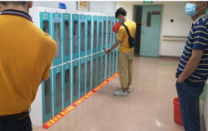
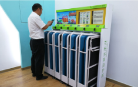
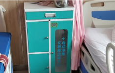

共享陪护床，星护共享陪护床缓解焦虑健康守候！
共享陪护床，星护共享陪护床缓解焦虑健康守候！共享陪护床的出现得益于我国医院普遍缺乏家属陪护设施，特别是陪护休息床位，极度缺乏。我国每年住院人群非常庞大，加上陪护家属，是一个不可忽视的人员。他们的需求，意味着巨大的商机。

共享陪护床是共享经济浪潮下，基于互联网+与人工智能基础上的新型共享产品。这种共享产品无需人值守，可以自助租赁，可以给患者陪护家属一个正式、舒服的睡觉床位。这种睡觉床位还可以收拢展开，占地空间少，一些款式还非常便于携带、移动。
目前市场上的共享陪护床有三种形态，分别是柜式、卡槽式、移动式。柜式共享陪护床，外形是一个病房床头柜，里面是一个可以伸展的床位。用的时候伸展开来，用完收拢关上柜门即可。

卡槽式陪护床是一个可以对折的床体，床体下面有6个小轮，可以方便移动。使用的时候，去桩体取床，推动要睡觉的位置展开。用完的时候，折叠起来，推动到桩体退还。
移动式陪护床是床体由可以收拢的交叉钢叉构成，使用的时候可以展开，用完可以收起来。收好的移动式陪护床非常轻便、小巧，便于携带。使用完毕的移动式共享陪护床可以放入柜体内，实现自动臭氧杀菌。

星护健康共享陪护床作为行业内最负盛名的品牌，依靠过硬的材质、优良的工艺、稳定的性能赢得市场、地方、运营方以及用户的欢迎。目前星护共享陪护床正在陆续进入全国各大医院住院部，给家属陪护人群提供方便、快捷的公共服务。
星护健康共享陪护床首创无需外接电源，拥有自主知识产权NB智能物联网锁，在这些方面处于行业领先位置，市场同类产品短时间很难赶上。
作为行业内第一品牌，花粉共享陪护床投放市场缓解了患者陪护家属的焦虑，让他们能够很好的休息恢复体力，让医院陪护更健康，更温馨。